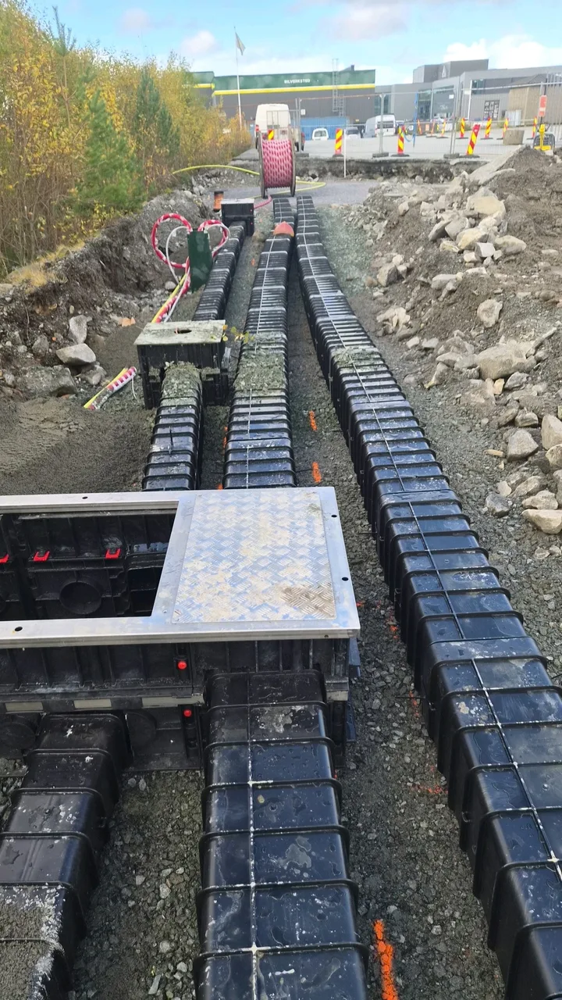

 Modulært / Tilpassbart / Gjennomtenkt
Modulært / Tilpassbart / Gjennomtenkt03 / Gjennomtenkte systemer
Mindre
friksjon.
Mer flyt.
Fra modulære kummer til fleksible kabelkanaler. Vi tror at de beste infrastrukturløsningene gjør kompliserte oppgaver enklere ute på anlegget.
Se produktutvalget ↗